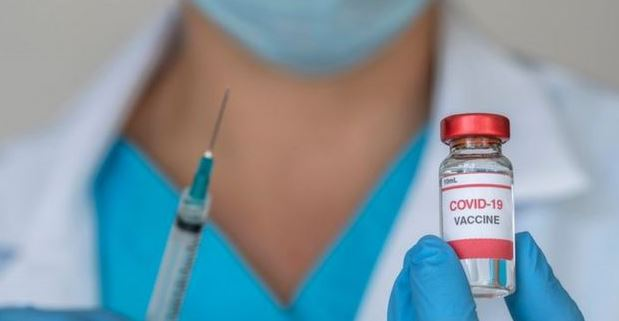
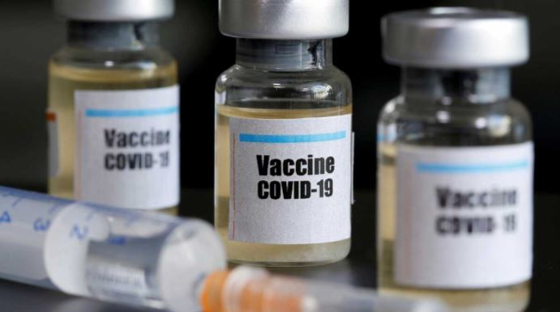

Las vacunas en Colombia
¿Para qué sirven las vacunas?

El paquete de vacunación básico es importante para la prevención de enfermedades y muertes masivas en la población más vulnerable niños niñas ancianos y personas que habitan en los países más pobres. Si bien es cierto que hace muchos años se viene atendiendo con vacunas la mayoría de enfermedades que atacan a los seres humanos, también es cierto que muchas de estas vacunas no llegan a las personas y países más pobres, inclusive muchas de estas vacunas no son eficientes para tratar las enfermedades y en muchas ocasiones hay rebrotes causando muertes. Uno de los principales problemas para acceder a un sistema de vacunación completo y actualmente covid-19 es la especulación de los precios, los países más ricos actualmente se han llevado más rápido y en mayor cantidad las vacunas necesarias, dejando de lado y para más tarde la vacunación en los países más pobres, esto conlleva a que haya más propagación de la enfermedad y más muertes, más problemas económicos y más decadencia social.
Desafíos logísticos

Es importante tener en cuenta qué países como Colombia con grandes zonas territoriales de difícil acceso, va a ser difícil organizar una logística para llevar la vacunación a estas personas que viven en zonas alejadas, no solamente porque no existe acceso en carreteras, sino también por el conflicto armado que existe en Colombia, lo cual dificulta acceder a esos territorios. También tener en cuenta la falta de organización y planeación que muchas veces existen en el gobierno para qué municipios o ciudades estén preparadas para almacenar y distribuir las vacunas a tiempo. Anteriormente se podrían demorar más de 10 años en desarrollar una vacuna efectiva para una enfermedad, actualmente se demoraron aproximadamente un año para desarrollar la vacuna del coronavirus. Se debe tener en cuenta que actualmente en países más pobres no se cuenta con la suficiente logística y personal capacitado para poder aplicarle a la población las vacuna del coronavirus.
Informarse sobre la vacuna desde para que sirve la vacuna, hasta los desafios por la organizacion, a cual temperatura se debe de tener la vacuna de el covid.
VOLVER